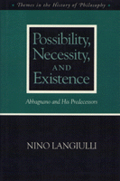

<body bgcolor="#FFFFFF" text="#000000" link="#0000FF" vlink="#CC0000" alink="#CC0000"><center><hr width="350" size="1" align="center" noshade>An investigation of Abbagnano's attempt to raise possibility to a level of prime importance and his understanding of existence<hr width="350" size="1" align="center" noshade><p><a href="https://cdcshoppingcart.uchicago.edu/Cart/ChicagoBook.aspx?ISBN=9780877229216&&PRESS=temple" target="_top">Buy this book!</a> | <a href="https://cdcshoppingcart.uchicago.edu/Cart/Cart.aspx?PRESS=temple" target="_top">View Cart</a> | <a href="https://cdcshoppingcart.uchicago.edu/Cart/Cart.aspx?PRESS=temple" target="_top">Check Out</a></p><p></p></center><!--none//--><h1>Possibility, Necessity, and Existence</h1>
<H2>Abbagnano and His Predecessors</H2>
<h3>Nino Langiulli</h3>
<P>cloth 0-87722-921-X $85.50, Jun 92, <FONT COLOR=#990033>Available</FONT>
<br>Electronic Book 1-43990-408-1 $85.50 <FONT COLOR=#990033>Available</FONT>
<BR> 208 pp
6x9
</P><p>In this systematic historical analysis, Nino Langiulli focuses on a key philosophical issue, possibility, as it is refracted through the thought of the Italian philosopher Nicola Abbagnano. Langiulli examines Abbagnano's attempt to raise possibility to a level of prime importance and investigates his understanding of existence. In so doing, the author offers a sustained exposition of and argument with the account of possibility in the major thinkers of the Western tradition&#151Plato, Aristotle, Kant, and Kierkegaard. He also makes pertinent comments on such philosophers as Diodorus Cronus, William of Ockham, Spinoza, Hobbes, and Hegel, as well as such logicians as DeMorgan and Boole.
<p>Nicola Abbagnano, who died in 1990, recently came to the attention of the general public as an influential teacher of author Umberto Eco. Creator of a dictionary of philosophy and author of a multiple-volume history of Western philosophy, Abbagnano was the only philosopher, according to Langiulli, to argue that "to be is to be possible."
<p>Even though the concept of probability and the discipline of statistics are grounded in the concept of possibility, philosophers throughout history have grappled with the problem of defining it. Possibility has been viewed by some as an empty concept, devoid of reality, and by others as reducible to actuality or necessity&#151concepts which are opposite to it. Langiulli analyzes and debates Abbagnano's treatment of necessity as secondary to possibility, and he addresses the philosopher's conversation with his predecessors as well as his European and American contemporaries.
<BR>&nbsp;<h2>Contents</h2><P>
<p>Preface
<br>Acknowledgments
<p><b>Part I: From a Positive Existentialism to a Radical Empiricism</b>
<p>1. The Backgrounds of and Initial Efforts Toward a Pure Conception of Possibility
<br><I>The Influence of Antonio Aliotta's Experimentalism &#149
First Publication: Against the Mythical Conception of Reason &#149
Abbagnano's Concern with Science and with the History of Philosophy</I>
<p>2. Abbagnano's Systematic Thought: The Four Phases
<br><I>Antirationalism &#149
The Search for the Principle of Metaphysics &#149
The Call for a Positive Existentialism &#149
Developing a Positive Existentialism &#149
The Three Requirements for a Positive Existentialism</I>
<p>3. The Program of a Positive Existentialism
<br><I>Toward a Radical Empiricism &#149
Parallels with Some More Recent American Philosophy &#149
Dumping Philosophy and the Madness of It That Is Also Folly &#149
Philosophy and Foundationalism &#149
Convergence and Divergence &#149
Marginal Comments on Derrida &#149
Prospects and Conclusions</I>
<p><b>Part II: Sources for the Concept of Possibility</b>
<p>4. Plato
<br><I>Defining Existence in the </I>Sophist<I> &#149
Arguments Connected with the Definition of Existence in the </I>Sophist<I> &#149
Abbagnano’s Interpretation of the Definition of Existence in the </I>Sophist<I> &#149
Questions About Abbagnano’s Interpretation</I>
<p>5. Aristotle
<br><I>Abbagnano’s Position on Greek Metaphysics &#149
Aristotle’s Arguments for the Priority of Actuality over Possibility &#149
Aristotle and the Master Argument of Diodorus Cronus</I>
<p>6. Kant
<br><I>Kant’s Precritical Notion of Possibility &#149
The Notion of Possibility in the </I>Critique of Pure Reason<I> &#149
The Notion of Possibility in the </I>Critique of Judgment<I></I>
<p>7. Kierkegaard
<br><I>Rejecting the Notion of Possibility from the </I>Concluding Unscientific Postscript<I> &#149
Accepting the Notion of Possibility from the </I>Philosophical Fragments<I> &#149
An Incompatibility in Kierkegaard’s Sense of Possibility</I>
<p><b>Part III: Possibility and Existence</b>
<p>8. The Different Senses of Possibility
<br><I>A Nominal Definition of Possibility &#149
The Connective in the Nominal Definition &#149
Three Conceptual Definitions of Possibility</I>
<p>9. The First Definition: Possibility as Noncontradiction
<br><I>Variations of the First Definition &#149
The Characteristics of the First Definition &#149
Difficulties of the First Definition</I>
<p>10. The Second Definition: Possibility as Necessary Realization
<br><I>Variations and Characteristics of the Second Definition &#149
Some Consequences of the Second Definition &#149
Some Objections to Hartmann’s Formulation &#149
A Distinction Between Possibility and Contingency</I>
<p>11. The Third and Proper Sense of Possibility
<br><I>Formulating the Third Sense &#149
The Logical Behavior of the Third Sense &#149
The Relation of the Third Sense to Existence &#149
Differences Between Possibility Proper and Actuality &#149
Possibility Proper and the Ontological Predicate (the “Is” of Existence) &#149
The Specter of Circularity &#149
Considerations on the Ontological Predicate</I>
<p>12. Various Senses and Theories of Being
<br><I>The Article "Essere" &#149
The Predicative Use of </I>To Be<I> &#149
Some Critical Comments &#149
The Existential Use of </I>To Be<I></I>
<p>13. Some Concluding Critical Reflections
<br><I>A Doubt About Abbagnano's Antimetaphysic &#149
The Truth or Consequences of an Ontology of Possibility &#149
The Difficulty of Connecting Existence and Possibility &#149
The Question of Necessity &#149
Possibility Without Necessity Is Meaningless</I>
<p>Postscript
<br>Notes
<br>Bibliography
<br>Index of Names
</P><BR>&nbsp;<H2>About the Author(s)</H2>
<P><b>Nino Languilli</b> is Professor of Philosophy at St. Francis College, Brooklyn, New York.</P>
<BR><H2>Subject Categories</H2>
<p><A HREF="/tempress/philosophy.html" TARGET="_top">Philosophy and Ethics</a>
</p>
<BR><h2 class="inpageheading">In the series</H2>
<P><I><a href="http://www.temple.edu/tempress/themes_philo.html" onMouseOver="window.status='Click for other books in this series!'; return true;" onMouseOut="window.status=''; return true;" target="_top">Themes in the History of Philosophy</a></i>, edited by Edith Wyschogrod.
</p><p><I>Themes in the History of Philosophy</I>, edited by Edith Wyschogrod, will serve as a collection of outstanding work in the history of philosophy. It will include interpretations of significant themes, problems, and tendencies in the history of thought; studies of important thinkers, schools, and movements; and inquiries into the relation of previous philosophies to literature, art, and history.</p>
<p align="center"><a href="https://cdcshoppingcart.uchicago.edu/Cart/ChicagoBook.aspx?ISBN=9780877229216&&PRESS=temple" target="_top">Buy this book!</a> | <a href="https://cdcshoppingcart.uchicago.edu/Cart/Cart.aspx?PRESS=temple" target="_top">View Cart</a> | <a href="https://cdcshoppingcart.uchicago.edu/Cart/Cart.aspx?PRESS=temple" target="_top">Check Out</a></p><p><font face="Arial" size="1"><a href="copyright.html" onMouseOver="window.status='Web Copyright Policy';return true;" onMouseOut="window.status=''" title="Web Copyright Policy">&copy;</a> 2015 <a href="http://www.temple.edu" target="new" onMouseOver="window.status='Link to Temple University home page';return true;" onMouseOut="window.status=''" title="Link to Temple University home page">Temple University</a>. All Rights Reserved. http://www.temple.edu/tempress/titles/880_reg.html</font></p>